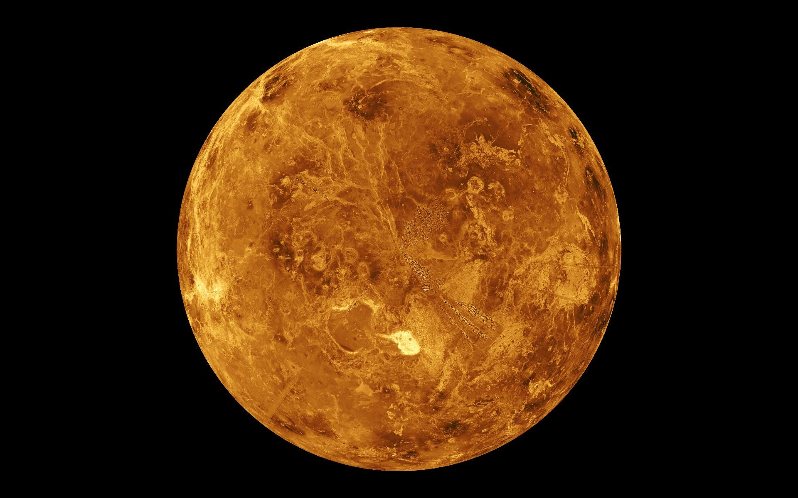
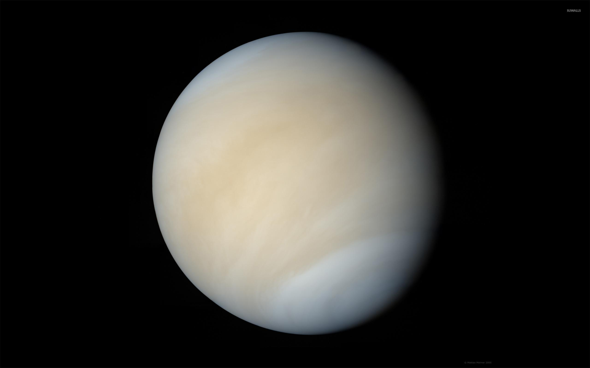

Des chercheurs ont détecté dans l’atmosphère de Vénus la présence de phosphine et émettent l’hypothèse que cette molécule serait d’origine biologique. Une annonce à prendre avec prudence, préviennent des spécialistes. Notre étoile du Berger abrite-t-elle la vie? La découverte dans les nuages de Vénus d'une molécule qui, sur Terre, est essentiellement associée à l'activité humaine ou aux microbes, a été qualifiée par le chef de la Nasa « d'événement le plus important » dans la recherche de vie extra-terrestre.
De nombreux spécialistes sont néanmoins plus prudents. « Cette découverte excite la curiosité de beaucoup de scientifiques, mais il ne faut pas sauter à la conclusion qu'on va trouver du vivant sur Vénus, c'est encore un peu tôt », note Francis Rocard, responsable des programmes d'exploration du système solaire au Centre national d'études spatiales (Cnes), joint par Le Parisien.
D'où vient la phosphine retrouvée sur Vénus ?
Une équipe américano-britannique composée de chercheurs de l'université de Manchester, de Cardiff et du prestigieux Massachusetts Institue of Technology (MIT) ont annoncé lundi avoir détecté la présence d'un gaz rare dans les couches nuageuses de Vénus. Ce gaz, c'est la phosphine, un atome de phosphore marié à trois d'hydrogène.
Selon ces scientifiques, cette phosphine pourrait être la conséquence « d'une forme de vie qui devrait être de petite taille, pour flotter librement », a détaillé Jane S. Greaves, professeure d'astronomie à l'Université de Cardiff, qui a dirigé les recherches.
La molécule a été détectée par l'observation de l'atmosphère vénusienne à l'aide de deux radiotélescopes, Alma au Chili et James Clerk Maxwell à Hawaï.La phosphine se synthétise soit par réaction chimique -c'est le cas pour des planètes géantes gazeuses du système solaire, comme Saturne ou Jupiter-, soit par des processus biologiques, c'est-à-dire du vivant », nous explique Olivier Mousis, enseignant-chercheur au Laboratoire d'astrophysique de l'université d'Aix-Marseille (LAM/CNRS). Sur Terre, les traces de phosphine proviennent exclusivement d'une activité humaine ou microbienne.Après avoir détecté les molécules dans les nuages de Vénus, les chercheurs se sont d'abord demandé si elles étaient formées par une réaction chimique. Ils ont étudié de nombreux scénarios, en vain. « Les chimistes ne parvenant pas à comprendre comment l'atmosphère de cette planète pourrait synthétiser la phosphine, ils ont émis l'hypothèse d'une forme de vie, par analogie avec la Terre », développe Francis Rocard.
Quelles sont les conséquences d'une telle découverte ?

Pour les spécialistes, l'hypothèse d'une origine biologique de la phosphine sur Vénus pourrait très bien être infirmée par d'autres futures études. « Peut-être que la phosphine détectée sur Vénus provient de processus chimiques dont on ignore encore l'existence », note Olivier Mousis. « La détection de phosphine n'est pas une preuve robuste de vie, seulement d'une chimie anormale et inexpliquée », a d'ailleurs insisté l'autrice principale de l'étude, Jane S. Greaves.
La détection de la molécule sur Vénus, effectuée à l'aide de deux radiotélescopes, n'est pas suffisante selon d'autres spécialistes. « La première chose à faire, c'est de vérifier par d'autres moyens indépendants s'il y a vraiment de la phosphine sur Vénus, expliquait au Figaro François Forget, spécialiste des atmosphères planétaires au Laboratoire de météorologie dynamique. Après, si cette présence est confirmée, il faudra imaginer une chimie très exotique, qui n'est pas forcément liée à la vie, pour l'expliquer. »
Il est temps de donner la priorité à Vénus », a lancé l'administrateur de la Nasa, alors que les recherches de vie passée se concentrent aujourd'hui sur Mars, assaillie de sondes et de robots américains. « Cette découverte a le mérite de relancer les missions vers cette planète », applaudit Olivier Mousis. Elle « arrive d'ailleurs au bon moment pour la mission EnVision », ajoute-t-il.
Ce projet de sonde spatiale a pour objectif de cartographier la surface de Vénus. Il est en cours d'évaluation par l'Agence spatiale européenne, qui tranchera en 2021. « Si cette mission est sélectionnée, il faudrait proposer à la Nasa de participer. Les Européens fourniraient l'orbiteur et les Américains pourraient installer un module de descente, imagine l'astrophysicien. Ce module serait largué avec un parachute, descendrait à travers les nuages de Vénus et permettrait d'en mesurer la composition, notamment à l'endroit où la phosphine a été détectée. »
L'étude publiée lundi permet ainsi de renforcer « la motivation des chercheurs et les décideurs à aller voir sur place pour tenter d'expliquer comment la Terre et Vénus, les planètes jumelles, ont évolué si différemment », poursuit le planétologue. « Ça pourrait aussi remobiliser les études scientifiques chez les plus jeunes et redonner des moyens à la recherche. Y a-t-il de la vie dans les nuages de Vénus ? Sur Mars dans le passé ? On n'a pas fini de réécrire les livres des écoliers ! »